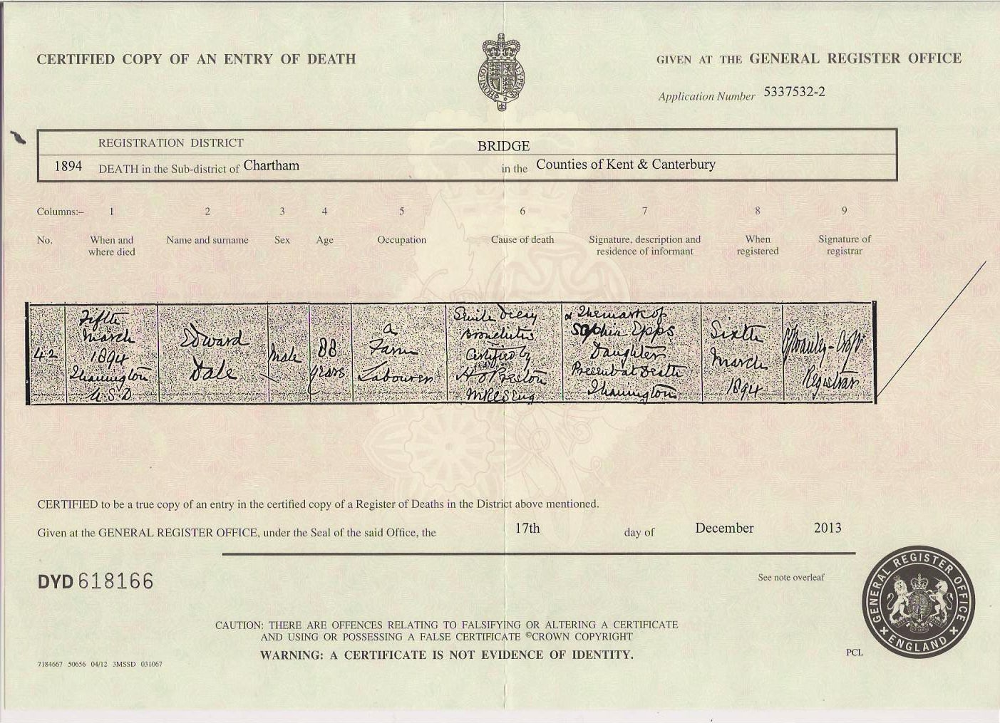
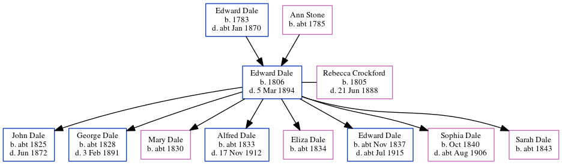

Edward Dale 1806 - 1894
[ Home ] | [ Calendar ] | [ Surnames Index ] | [ Census Index ] | [ Family History ]The child of Edward Dale and Ann Stone, Edward Dale, the 3 times great-grandfather of Nigel Horne, was born in Nackington, Kent, England in 18061,2,3,4,5,6,7,8,9, was baptized in Canterbury, Kent, England on Nov 16, 1806 and also married Rebecca Crockford (with whom he had 8 children: John, George, Mary, Alfred, Eliza, Edward, Sophia and Sarah Ann) there at St Mary Northgate on Jun 17, 182510. Like his father, he was an agricultural laborer.
During his life, he was living in Chartham Hatch, Kent, England on Jun 6, 184117 and on Mar 30, 185118; at Mount Pleasant, Chartham, Kent on Apr 7, 186116; at The Green, Chartham, Kent on Apr 2, 187115 and on Apr 3, 188114; and at Milton Cottage, Chartham, Kent on Apr 5, 189119when he was living with his daughter Sophia, following the death of his wife on Jun 21, 1888.
He died on Mar 5, 1894 in Thanington, Kent, England8 (senile decay and bronchitis) and was buried at St Mary's Church, Chartham, Kent on Mar 8, 189411,12,13.
Parents
- Edward was born in 1783
- Ann was born c. 1785
Children
- John was born c. 1825
- George was born c. 1828
- Mary was born c. 1830
- Alfred was born c. 1833
- Eliza was born c. 1834
- Edward was born c. Nov 1837
- Sophia was born in Oct 1840
- Sarah Ann was born c. 1843
Citations
- 1841 England Census Online publication - Provo, UT, USA: The Generations Network, Inc., 2006.Original data - Census Returns of England and Wales, 1841. Kew, Surrey, England: The National Archives of the UK (TNA): Public Record Office (PRO), 1841. Data imaged from the National
- 1851 England Census Online publication - Provo, UT, USA: The Generations Network, Inc., 2005.Original data - Census Returns of England and Wales, 1851. Kew, Surrey, England: The National Archives of the UK (TNA): Public Record Office (PRO), 1851. Data imaged from the National
- 1861 England Census Online publication - Provo, UT, USA: The Generations Network, Inc., 2005.Original data - Census Returns of England and Wales, 1861. Kew, Surrey, England: The National Archives of the UK (TNA): Public Record Office (PRO), 1861. Data imaged from the National
- 1871 England Census Online publication - Provo, UT, USA: The Generations Network, Inc., 2004.Original data - Census Returns of England and Wales, 1871. Kew, Surrey, England: The National Archives of the UK (TNA): Public Record Office (PRO), 1871. Data imaged from the National
- 1881 England Census Online publication - Provo, UT, USA: The Generations Network, Inc., 2004. 1881 British Isles Census Index provided by The Church of Jesus Christ of Latter-day Saints © Copyright 1999 Intellectual Reserve, Inc. All rights reserved. All use is subject to the
- 1891 England Census Online publication - Provo, UT, USA: The Generations Network, Inc., 2005.Original data - Census Returns of England and Wales, 1891. Kew, Surrey, England: The National Archives of the UK (TNA): Public Record Office (PRO), 1891. Data imaged from The National
- England & Wales deaths 1837-2007 - Findmypast
- England & Wales, FreeBMD Death Index: 1837-1915 Online publication - Provo, UT, USA: The Generations Network, Inc., 2006.Original data - General Register Office. England and Wales Civil Registration Indexes. London, England: General Register Office. © Crown copyright. Published by permission of the Cont
- Kent, Canterbury Archdeaconry burials 1538-1988 - Findmypast
- Public Member Trees Online publication - Provo, UT, USA: The Generations Network, Inc., 2006.Original data - Family trees submitted by Ancestry members.Original data: Family trees submitted by Ancestry members.
- Familysearch.org (www.familysearch.org)
- Kent, Canterbury Archdeaconry burials 1538-1988 - Findmypast
- Kent, Canterbury Archdeaconry Burials - Findmypast
- 1881 England, Wales & Scotland Census - Findmypast (was age 75 and the head of the household)
- 1871 England, Wales & Scotland Census - Findmypast (was age 65 and the head of the household)
- 1861 England, Wales & Scotland Census - Findmypast (was age 55 and the head of the household)
- 1841 England, Wales & Scotland Census - Findmypast (was age 35)
- 1851 England, Wales & Scotland Census - Findmypast (was age 44 and the head of the household)
- 1891 England, Wales & Scotland Census - Findmypast (was age 89 and the father in law of the head of the household)
Media
Edward Dale - Death Certificate

Canterbury Marriages Transcription - GBPRS-CANT-M-97175529-1
England & Wales deaths 1837-2007 - BMD/D/1894/1/AZ/000094/157
Canterbury Burials Transcription - GBPRS-CANT-D-95596233
Canterbury Burials Transcription - GBPRS-CANT-D-95596471
1881 England, Wales & Scotland Census - GBC/1881/0004705686
1841 England, Wales & Scotland Census - GBC/1841/0014002930
Kent, Canterbury Archdeaconry burials - GBPRS/CANT/D/95596574
1891 England, Wales & Scotland Census - GBC/1891/0005719335
Family Tree
Generated by ged2site. Last updated on Jun 11, 2024